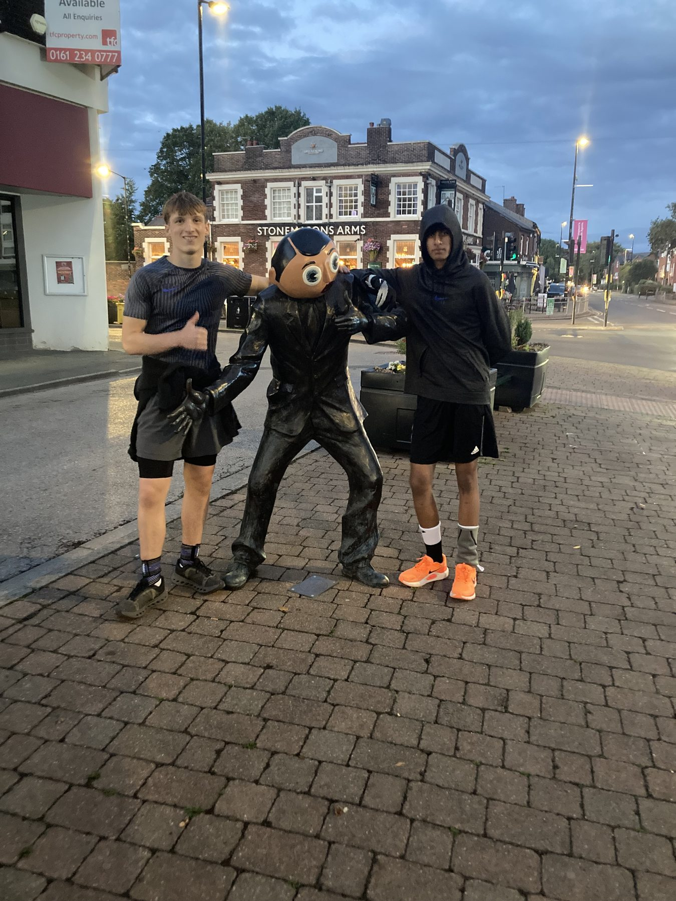
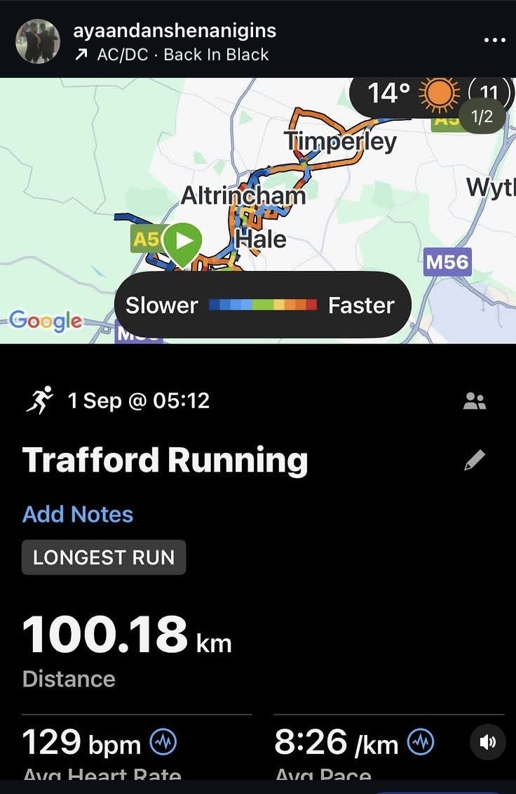
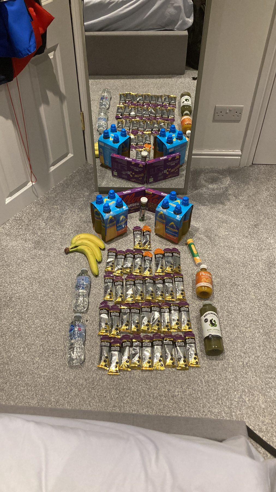

✕ CLOSE

Fatigue makes cowards of us all.— Vince Lombardi
Two remarkable 16-year-olds from Altrincham Grammar School for Boys… running 100 kilometres in just 20 hours, all to raise money for clean water.
5km. Every hour, on the hour. For 20 hours straight.
Starting at 4am and not stopping until 2am the next day — no proper sleep, just short, broken recoveries between each stint. 100.18km later, looping Trafford, Altrincham, Hale and Timperley, it was done.
It ran under the Team Water campaign — the MrBeast-style clean-water push — raising for WaterAid: 1,000 years of clean drinking water. The clock didn't care how we felt. You either got up for the next 5K, or you didn't.


1,000 years of clean drinking water, funded by 20 hours of refusing to stop.
Donate via Tiltify